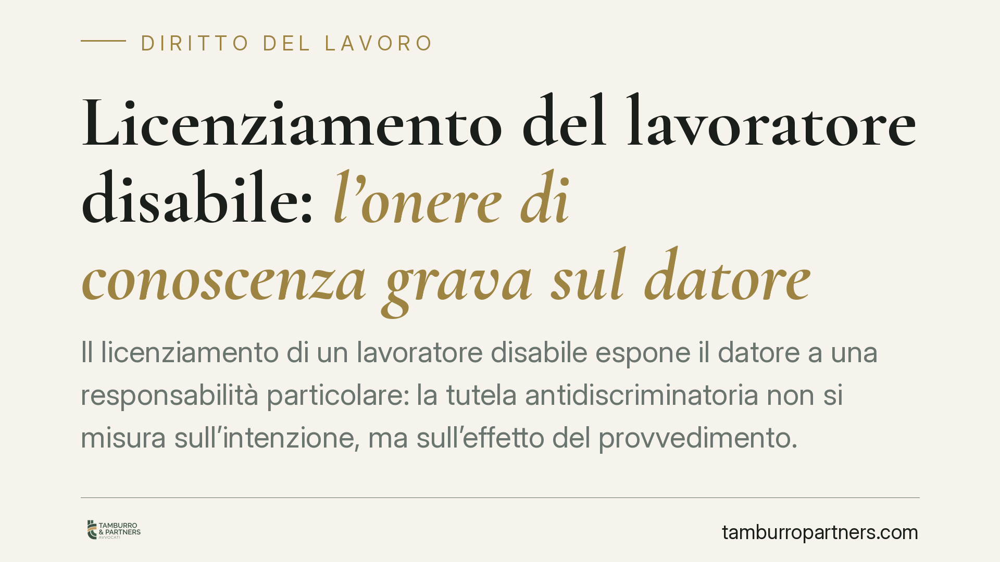

Licenziamento del lavoratore disabile: l'onere di conoscenza grava sul datore
Il licenziamento di un lavoratore disabile espone il datore a una responsabilità particolare: la tutela antidiscriminatoria non si misura sull'intenzione, ma sull'effetto del provvedimento. L'azienda dispone di strumenti per conoscere lo stato di salute del dipendente e non può invocare la propria ignoranza come scudo. Esaminiamo il quadro normativo e gli obblighi documentali che ne derivano.

Il fatto e la questione
Il tema è ricorrente nel contenzioso del lavoro: un datore di lavoro licenzia un dipendente la cui disabilità non era stata formalmente comunicata. Si può parlare di licenziamento discriminatorio se l'azienda sostiene di non aver conosciuto la condizione del lavoratore?
La risposta richiede attenzione. La disciplina antidiscriminatoria non ruota attorno alla volontà di discriminare, ma attorno all'effetto del provvedimento e agli strumenti che il datore aveva per conoscere la situazione. È su questo piano che va impostata l'analisi, evitando scorciatoie fondate su generici richiami alla buona fede.
Inquadramento normativo
La tutela del lavoratore disabile contro il licenziamento discriminatorio ha fondamento in un corpus normativo preciso.
Il D.Lgs. 216/2003, attuativo della Direttiva 2000/78/CE, definisce la nozione di discriminazione. L'art. 2 distingue tra discriminazione diretta e indiretta: quest'ultima ricorre quando una disposizione o una prassi apparentemente neutra pone una persona disabile in posizione di particolare svantaggio. L'elemento intenzionale non è richiesto: conta l'effetto discriminatorio oggettivo.
Centrale è l'art. 3, comma 3-bis del medesimo decreto, che impone al datore di adottare accomodamenti ragionevoli per garantire alle persone con disabilità la piena parità sul lavoro. L'omessa adozione di tali misure può costituire discriminazione: prima di procedere al licenziamento, il datore deve dunque verificare se la posizione lavorativa fosse adattabile.
Si aggiungono l'art. 15 dello Statuto dei Lavoratori (L. 300/1970), che sancisce la nullità degli atti discriminatori, e l'art. 10 della L. 68/1999 sul regime del licenziamento del disabile avviato al lavoro mediante collocamento obbligatorio.
Quanto alla conoscibilità dello stato di salute, il riferimento non è civilistico ma antinfortunistico. Il D.Lgs. 81/2008 (Testo Unico Sicurezza) disciplina la sorveglianza sanitaria: l'art. 25 individua gli obblighi del medico competente, l'art. 41 regola le visite mediche e i giudizi di idoneità. Attraverso questo canale il datore dispone di informazioni strutturate sullo stato di salute del lavoratore, nei limiti e con le garanzie di riservatezza previste dalla legge.
Gli artt. 1175 e 1375 c.c. — correttezza e buona fede nell'esecuzione del contratto — restano un corollario, non il fondamento della tutela.
Implicazioni pratiche
Il punto operativo è l'onere della prova. Nel contenzioso antidiscriminatorio il lavoratore che alleghi elementi di fatto idonei a fondare, in termini precisi e concordanti, la presunzione di discriminazione sposta sul datore l'onere di dimostrare l'insussistenza del carattere discriminatorio del licenziamento.
In concreto, l'azienda non può limitarsi a dichiarare di non aver saputo. Deve poter documentare le ragioni oggettive del recesso e, quando la disabilità fosse conoscibile attraverso la sorveglianza sanitaria, la verifica sulla possibilità di accomodamenti ragionevoli.
Il silenzio del dipendente sulla propria condizione non vale di per sé a escludere la responsabilità, quando il datore disponeva comunque di canali istituzionali per conoscere lo stato di idoneità. La riservatezza del dato sanitario tutela il lavoratore, non esonera l'impresa dai propri obblighi di verifica.
Le conseguenze del licenziamento discriminatorio sono severe: nullità del recesso, reintegrazione e risarcimento, con un regime sanzionatorio tra i più gravosi dell'ordinamento giuslavoristico.
Cosa fare in concreto
- Documenta le ragioni oggettive del recesso con atti coevi al provvedimento, non ricostruiti a posteriori: la prova si costruisce prima, non durante la causa.
- Verifica i giudizi di idoneità espressi dal medico competente ex art. 41 D.Lgs. 81/2008 e conserva traccia delle valutazioni sulla posizione lavorativa.
- Valuta la praticabilità di accomodamenti ragionevoli ex art. 3, comma 3-bis D.Lgs. 216/2003 e metti per iscritto le ragioni di eventuale impossibilità o sproporzione.
- Coinvolgi il medico competente nelle decisioni che incidono su lavoratori con limitazioni di idoneità, rispettando le regole di riservatezza del dato sanitario.
- Conserva l'intera documentazione relativa al rapporto e alla sorveglianza sanitaria per il periodo utile a fronteggiare un eventuale contenzioso.
In sintesi
La tutela antidiscriminatoria del lavoratore disabile si fonda sull'effetto del provvedimento e sulla conoscibilità della condizione, non sulla mera intenzione. L'impresa che dispone di strumenti istituzionali per conoscere lo stato di salute del dipendente deve usarli e documentarne l'esito: è su questa diligenza, non sull'ignoranza, che si misura la legittimità del recesso.
---
*Contributo informativo a cura di Tamburro & Partners - Avv. Giuseppe Tamburro. Non costituisce parere legale.*
Ogni storia di lavoro ha i suoi tempi.
Se gestisci HR e vuoi un confronto su contenzioso, ispezioni o licenziamenti, scrivi allo studio. Ti rispondiamo entro un giorno lavorativo.